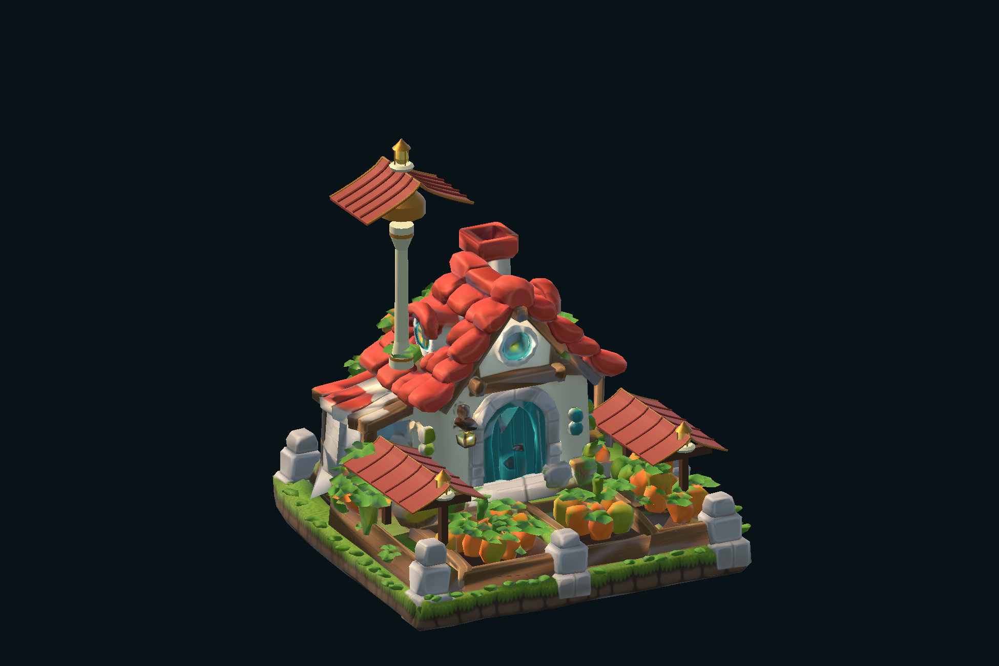
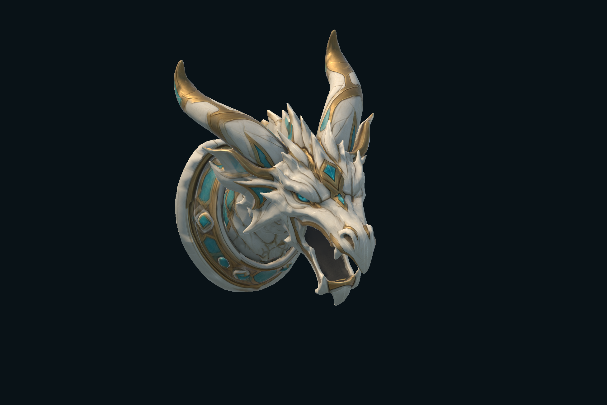

Noctaryl
A winged darkness familiar. Three attacks, violet energy and a complete animated companion.
Submitted for Unity review
Discover the familiar↗NYRAEVON / CREATURES & ENVIRONMENTS
Animated familiars and self-contained environments: see the assets as they appear in Unity.
A winged darkness familiar. Three attacks, violet energy and a complete animated companion.
Submitted for Unity review
Discover the familiar↗
An inquisitive fire familiar. Claw, fireball, flame breath and a playful ember chase.
Submitted for Unity review
Discover the familiar↗STATIC ENVIRONMENTS · THREE SEPARATE PRODUCTS
Three decorative compositions, available as independent products.

An ornamental tree, two green-roof pavilions and an ivory-and-gold platform, assembled as one decorative Unity prefab.
Submitted for Unity review
$8.99 USD
Explore the asset↗
A red-roof cottage, golden accents, side shelters and a tall ornamental upper roof. One static decorative composition for a fantasy environment.
Submitted for Unity review
$6.99 USD
Explore the asset↗
An open mouth, long horns and an ivory, gold and turquoise mounting collar. A decorative head sculpture with a WaterOutlet anchor for your own effect.
Submitted for Unity review
$4.99 USD
Explore the asset↗Familiars include animation and effects. Environments are static compositions with materials and a viewing scene. Each product is independent of the NYRAEVON game. Base models and textures originate from AI-assisted Meshy generation.